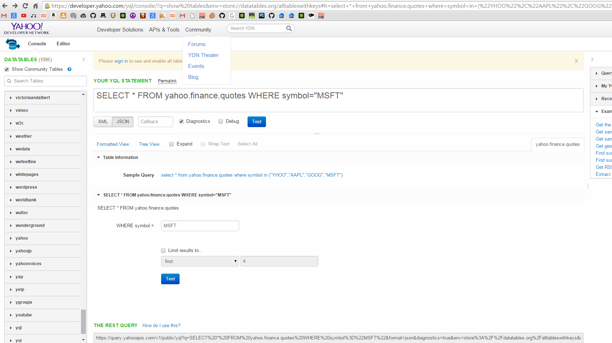
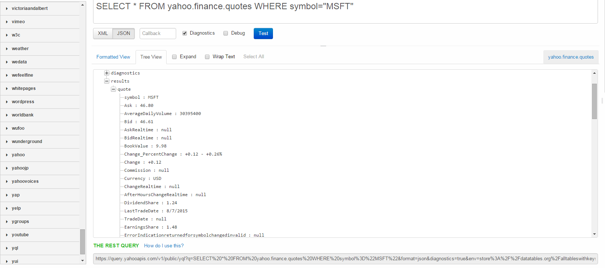

Querying for Microsoft's stock information
This page of the guide will show you another example of how to make a query and retrieve a response, this time from
the yahoo's finance table in YQL. Imagine you are creating a dynamic financial web application that requires Microsoft's stock market information.
YQL has a table that can do just that. Let's jump into it.

Like before, First thing you need to do is click the show community tables check-box to see the entire list of tables. Go under the
Yahoo tab, and find yahoo.finance.quotes. The query will appear but we don't want any information that is non-MSFT(microsoft).
Let's change our query to this:
select * from yahoo.finance.quotes where symbol in ("MSFT")
Or similar to before, if you'd like to manually do this yourself, click on the Tab on the right side for yahoo.finance.quotes to fill in
the required conditions for this table yourself. As you can see, the conditions for this table is much different than the craigslist
table. Let's Query for results!

Once again, click on the Tree View tab to view information like picture above. For this example, the
way to parse this JSON response would be query.diagnostics.results.quote - then any information you'd like to access here under quote.
You know have another REST QUERY link generated on the bottom, and once again, partition this query into strings for your application appropriately.